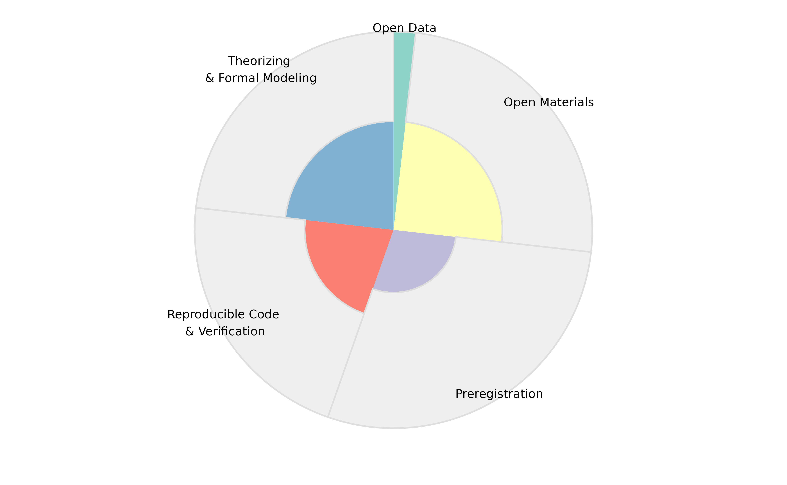

How to read the radarcharts of the relative rigor score (RRS)
Source:vignettes/Radarchart_interpretation.Rmd
Radarchart_interpretation.RmdThe general philosophy of RESQUE is: It doesn’t matter so much what kind of research you do - but when you do it, you should do it in a high quality. The radar chart helps you to see how many quality indicators have been fulfilled in multiple areas of methodological rigor.
- The width of each sector corresponds to the maximal number of rigor points one could gain. If you often opt-out of certain indicators, then the maximal points get reduced and the sector gets more narrow.
- The colored part of each sector shows the achieved rigor points.
In the following examples, we will focus on the Open Data sector of the radar charts.
“Rarely do it - but when we do it, we do it the right way.”
This candidate had nearly no chance to gain open data points, which can be seen from the very narrow sector. For example, he submitted many methodological/purely theoretical papers which had no data, or had convincing justifications that the data strictly could not be openly released.
But in the few cases where he could provide open data, he did it in a perfect way (i.e., according to all FAIR criteria and other indicators related to open data): The narrow sector has 100% of points.

“A lot of missed chances: You could have been better.”
In this profile, a lot of open data points could have been gained: The Open Data sector is very broad. But only very few of these potential points have actually been gained.